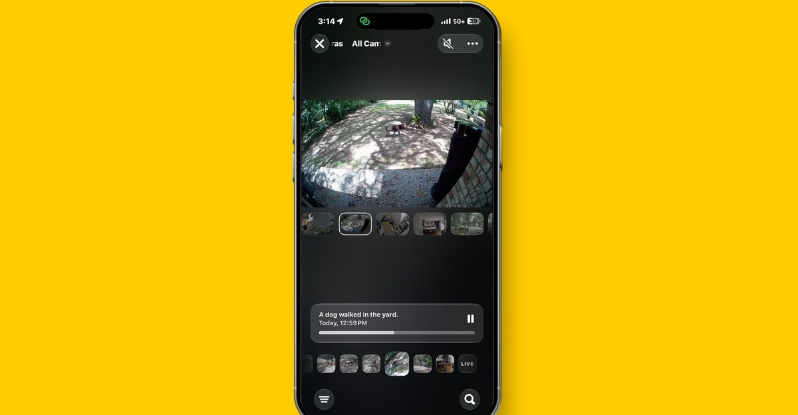
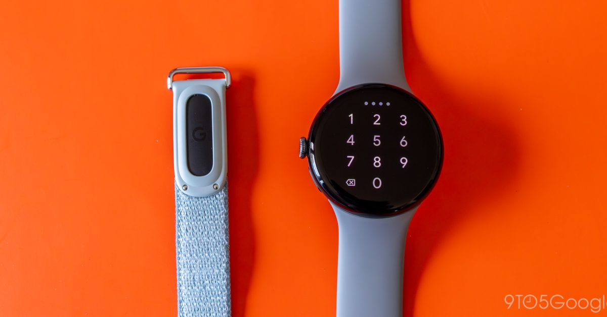
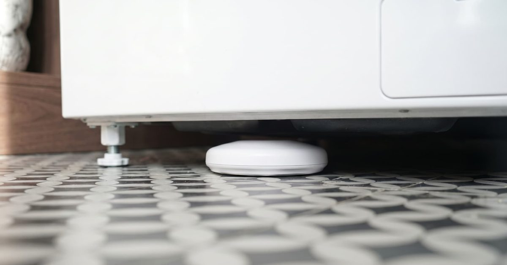
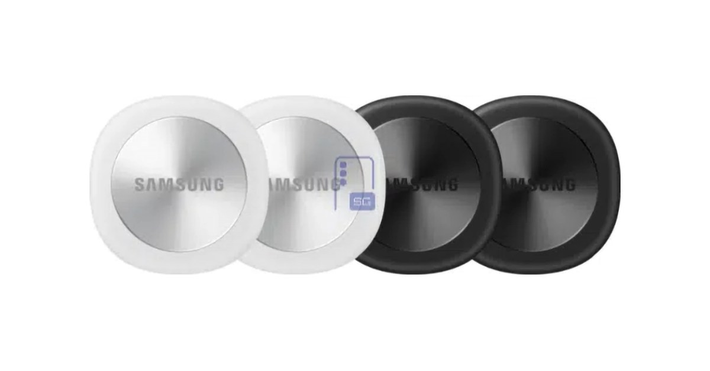

애플 홈 보안카메라 AI 영상 요약, 월 6만원대 구독 상품으로 등장
iOS 27과 tvOS 27 정식 출시와 함께 애플 홈에 AI 기능인 '애플 인텔리전스 포 홈'이 적용되면서 홈킷 시큐어 비디오에 방문자·상황을 텍스트로 요약해주는 기능이 추가됐다. 다만 이 기능은 아이클라우드+ 상위 요금제 가입자에게만 제공되며, 최상위 구간은 월 6만원 수준에 달해 스마트홈 AI 기능의 유료화 흐름을 보여준다.

iOS 27과 tvOS 27 정식 출시와 함께 애플 홈에 AI 기능인 '애플 인텔리전스 포 홈'이 적용되면서 홈킷 시큐어 비디오에 방문자·상황을 텍스트로 요약해주는 기능이 추가됐다. 다만 이 기능은 아이클라우드+ 상위 요금제 가입자에게만 제공되며, 최상위 구간은 월 6만원 수준에 달해 스마트홈 AI 기능의 유료화 흐름을 보여준다.
iOS 27과 macOS 27 코드를 분석한 개발자가 시리 AI를 클로드나 챗GPT 같은 외부 대화형 AI로 대체할 수 있는 옵션의 흔적을 발견했다고 전해졌다. 이용자들이 자신이 원하는 AI 비서를 선택하고 싶다는 요구는 1년 넘게 이어져 온 것으로, 실제 도입 시 음성비서 시장 구도에 변화를 줄 수 있다.
오픈AI, 앤스로픽, 구글 딥마인드, 스페이스X 등 주요 AI 기업 수장들이 주말 사이 AI 개발 속도를 늦추기로 느슨하게 합의했다는 소식이 전해졌다. 안전을 이유로 내세웠지만 일부 업계 관계자들은 이를 경쟁 제한을 위한 담합으로 해석하며 의구심을 제기하고 있다.

미국 FCC 인증 데이터베이스에 등록된 신규 기기가 구글의 웨어OS 기반 제품으로 추정되면서, 새로운 피트니스 트래커 출시 가능성이 제기됐다. 구체적인 사양은 아직 공개되지 않았지만 건강관리 웨어러블 라인업 확장 신호로 해석된다.

셸리(Shelly)의 신제품 '플러드 S 젠4'가 매터(Matter) 표준을 지원하는 누수 감지 센서로 출시돼 애플 홈에서도 바로 사용할 수 있게 됐다. 30달러 미만의 가격으로 저렴한 편에 속해, 수해 예방용 스마트홈 센서 시장의 가격 경쟁이 이어지고 있음을 보여준다.

유출된 정보에 따르면 곧 출시될 삼성 갤럭시 스마트태그3가 애플 에어태그의 아쉬운 점으로 꼽혀온 디자인 요소를 그대로 이어받을 것으로 전해졌다. 위치추적기 시장에서 삼성과 애플 제품 간 차별화가 크지 않다는 평가가 나온다.